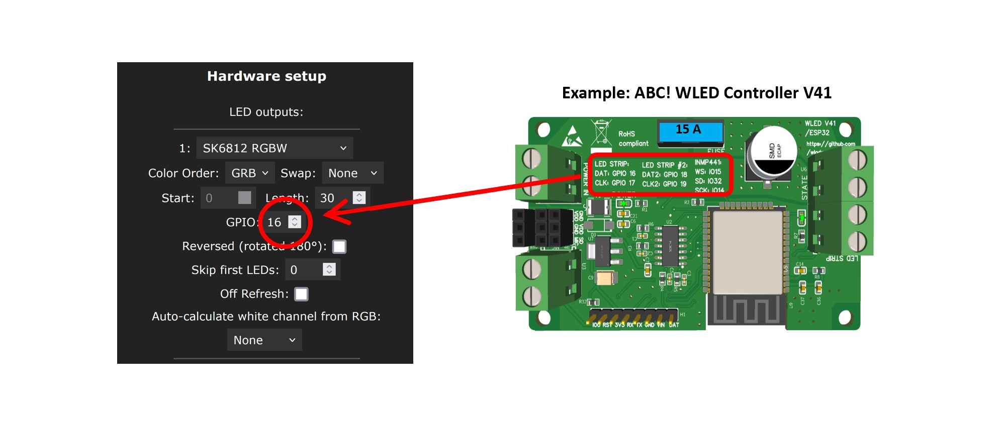
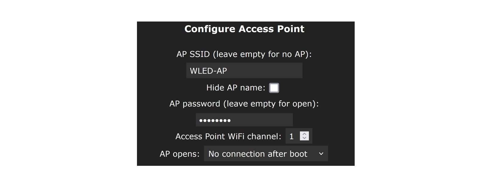
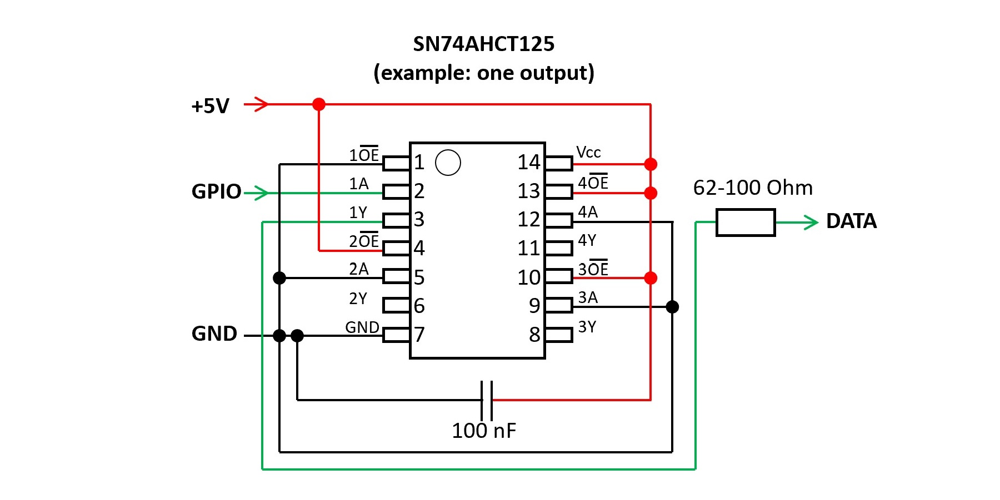
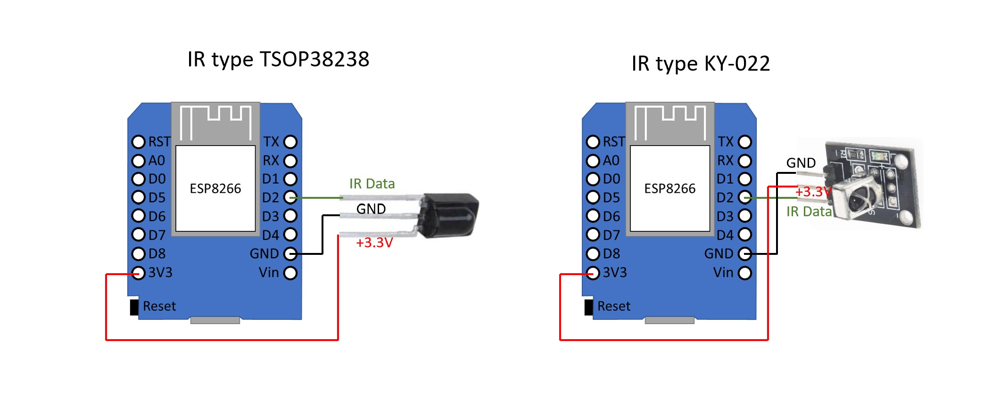
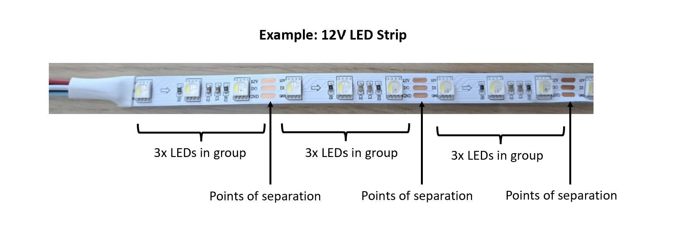
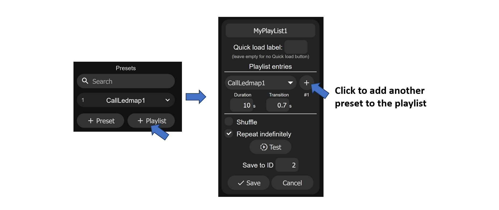
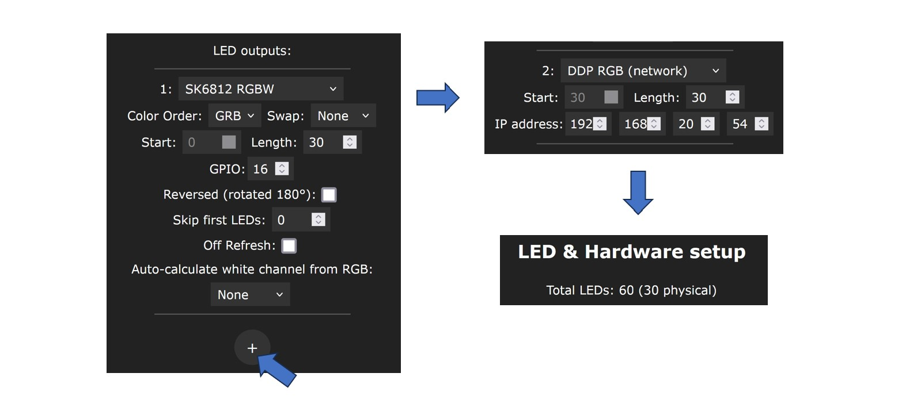

Наиболее распространенными ошибками являются:
1. Светодиодная лента подключена с обратной стороны: адресные светодиодные ленты имеют направление, обозначенное небольшими стрелками на ленте. Линию данных необходимо подключать с той стороны, где начинается стрелка. .
.
2. Неправильно установлен GPIO: Проверьте в настройках WLED, правильный ли номер GPIO установлен в качестве выхода данных. На готовых контроллерах правильные настройки обычно напечатаны либо на корпусе, либо на печатной плате.
.
3. Светодиодные ленты с большим количеством подключенных и настроенных светодиодов, но ограничены током на значении по умолчанию (850 мА). Часто это приводит к тому, что светодиоды кратковременно вспыхивают при смене цвета, а затем сразу гаснут или горят очень тускло. Проверьте и, при необходимости, скорректируйте настройки в WLED. .
.
4. Установлен неправильный тип светодиода. В настройках WLED должны быть установлены правильный тип светодиода и правильная последовательность цветов (RGB, BGR и т.д.). Проверьте правильность этих настроек. Необходимо знать тип светодиода, но можно просто попробовать последовательность цветов, чтобы понять, какой из них правильный. Особое внимание следует уделить светодиодной ленте WS2814, которая в настройках должна быть установлена как SK6812. .
.
5. Некачественная проводка. Проводка должна быть выполнена тщательно. Необходимо избегать неплотных контактов, холодных паяных соединений и т.д. Также необходимо следить за правильным размером кабелей (сечением) в целях безопасности.
Если программное обеспечение WLED устанавливается на ваш контроллер впервые и вы еще не ввели данные WiFi при установке с помощью веб-инсталлятора, то контроллер WLED создает точку доступа (WLAN) с именем WLED-AP. Пароль для этого WiFi - wled1234.
Этот пароль может быть изменен в разделе Config->WiFi setup.

В начальном состоянии с настройками по умолчанию, программное обеспечение WLED пытается подключиться к выбранной Wi-Fi сети. Если это не работает, точка доступа WLED-AP создается снова. Просто подождите, пока WLED-AP снова появится. Однако это поведение можно изменить в настройках WLED. Например, можно полностью отключить WLED-AP. Если вы уже настроили это так, то поможет только "жесткий сброс" или повторная прошивка с использованием WLED.
Ответ на этот вопрос зависит от того, просто ли вы хотите опробовать WLED или создать надежную и безопасную систему.
Для опробования WLED достаточно иметь плату микроконтроллера ESP8266 или ESP32 (например, такие как D1 mini или NodeMCU), источник питания 5V и светодиодную ленту 5V (например, с 30-90 светодиодами). Программное обеспечение WLED устанавливается на микроконтроллер (например, с помощью веб-установщика WLED).
Однако для правильной настройки необходимо учитывать и некоторые другие моменты:
1. Для надежной передачи данных от контроллера к светодиодной ленте необходим переключатель уровней (это обязательное условие, особенно при использовании светодиодных лент на 12 или 24 В). Далее необходимо спаять или сразу купить профессиональный готовый WLED-контроллер. Благодаря промышленному производству/сборке они также значительно надежнее, чем любая конструкция, спаянная вручную.
2. Из соображений безопасности следует обратить внимание на правильность выбора кабелей (длина, сечение, контакты) и встроенных предохранителей. Особенно это усложняется при использовании светодиодных лент, поскольку необходимы так называемые промежуточные кабели. Их необходимо правильно спланировать и реализовать. В качестве отправной точки можно использовать WLED Calculator.
3. Светодиодные ленты могут сильно нагреваться во время работы и даже перегреваться в случае неисправности. Опять же, из соображений безопасности необходимо защитить пространство вокруг них: не следует просто укладывать светодиодные ленты, в идеале их следует встроить в алюминиевые профили или что-то подобное. В нормальном режиме работы они выполняют функцию теплоотвода и тем самым продлевают срок службы светодиодов. В случае неисправности они могут защитить окружающее пространство.
4. Для экономии электроэнергии при выключенных светодиодах можно встроить реле, полностью отключающее напряжение на светодиодах.
В настоящее время (по состоянию на лето 2023 года) полностью поддерживаются только микроконтроллеры компании Espressif типа ESP8266 и ESP32 (с двухъядерным процессором). Некоторые более новые типы, такие как ESP32-C3, ESP32-S2 и ESP32-S3, поддерживаются экспериментально, но их активное использование пока не рекомендуется, так как подозревается наличие большого количества ошибок. Кроме того, установка этих новых типов не так проста: существует несколько вариантов аппаратуры/плат, для которых необходимо специально компилировать ПО. Следует также отметить, что некоторые платы ESP32-C3 (так называемые C3 mini V1.0.0) до сих пор продаются на рынке, где WLAN работает некорректно.
Следует также отметить, что в настоящее время Sound Reactive WLED поддерживает только микроконтроллеры ESP32. Последним релизом для ESP8266 стала версия SR WLED 13.0-beta3.
Контроллеры на базе ESP8266 могут управлять примерно 600-650 светодиодами. Контроллеры на базе ESP32 могут управлять до 4 000 светодиодов. Однако рекомендуется распределять светодиодные ленты по нескольким входам так, чтобы к одному входу было подключено не более 1000 светодиодов: большое количество светодиодов на одном выходе приводит к падению скорости управления и появлению неравномерностей с быстрыми эффектами. При использовании некоторых протоколов передачи данных необходимо также учитывать, что они могут поддерживать только ограниченное количество светодиодов.
Многие светодиодные ленты с напряжением 5 В могут работать и без переключателя уровней, особенно если провод между контроллером и светодиодной лентой очень короткий. Однако иногда могут возникать мерцания, например, светодиоды кратковременно вспыхивают белым светом. Возможны и более серьезные сбои. При использовании светодиодных лент с напряжением 12 или 24 В обычно не обойтись без переключателя уровней. Однако для светодиодных лент с напряжением 5 В, особенно в условиях производственной эксплуатации, также настоятельно рекомендуется использовать переключатель уровней для обеспечения бесперебойной работы: переключатель уровней адаптирует уровень сигнала микроконтроллера (3,3 В) к уровню сигнала светодиодной ленты (5 В для всех типов адресуемых светодиодов).
Профессиональные WLED-контроллеры всегда имеют встроенный сдвигатель уровня.
Управление адресными светодиодными лентами осуществляется с помощью управляющих сигналов, основная частота которых лежит в диапазоне от 800 кГц до целого ряда МГц (в зависимости от типа). Соответственно, сдвигатель уровня должен быть достаточно быстрым, чтобы чисто пропускать эти сигналы. Поэтому рекомендуется использовать такие быстрые типы, как SN74AHCT125, SN74AHCT32 или SN74LVC2T45. Такие типы, как SN74HCT (т.е. без буквы "A"), немного медленнее и подходят для светодиодов типа WS2812B, но могут быть слишком медленными для некоторых других типов светодиодов. В любом случае не рекомендуется использовать готовые двунаправленные I2C-переключатели уровней, построенные на транзисторах. При необходимости их можно использовать, но тогда следует заменить подтягивающий резистор на выходе (обычно 10 кОм) на меньший (<=1 кОм).
Шифтеры уровня SN74AHCT125 соединены между собой следующим образом:

Также может быть использован сдвигатель уровня TXS0108. Часто продаются небольшие печатные платы с этим сдвигателем уровня, которые можно использовать следующим образом:
В большинстве случаев рекомендуется использовать резистор в диапазоне от 33 до 68 КОм. Старая рекомендация была 470 кОм, но с точки зрения сегодняшнего дня значение в этом диапазоне не является нормальным. В принципе, работа без резистора также возможна, но при продуктивном использовании ее следует избегать.
Ответ зависит от того, что вы хотите с ним делать. Для экспериментов/проб достаточно платы микроконтроллера ESP8266 или ESP32 без каких-либо дополнительных компонентов. Если же вы хотите сделать чистую установку, которая должна работать длительное время без проблем, то без готовых профессиональных компонентов вам не обойтись. Качественные готовые WLED-контроллеры не только включают в себя все необходимые компоненты, но и значительно надежнее любых печатных плат, спаянных вручную, благодаря промышленному производству/сборке. Худшая идея - собирать все это с помощью проволочных перемычек или чего-то подобного: мало того, что свободные контакты заранее запрограммированы, так еще и можно создать высокий риск безопасности.
Да. Для этого на контроллере должен быть свободный цифровой вход (GPIO). Затем между этим входом и землей (GND) можно подключить кнопку, например, кратковременную. При нажатии на кнопку этот GPIO в этот момент соединяется с землей, и контроллер регистрирует это как нажатие. Однако для того чтобы это произошло, кнопка должна быть правильно настроена в настройках WLED. Сначала необходимо сконфигурировать кнопку. Для этого в разделе Config->LED Preferences необходимо присвоить номер GPIO, к которому подключена кнопка, параметру "Button" (например, сначала берется "Button 1"). Также необходимо определить тип кнопки. Для моментальной кнопки это "Pushbutton". Затем можно задать, что должно происходить при нажатии на кнопку. Для этого перейдите в раздел Config->Time & Macros. Здесь в области "Button actions" для каждой кнопки можно задать до трех предустановок (введите ID предустановки), которые должны выполняться при кратковременном, длительном или двойном нажатии на кнопку (поэтому три столбца). Разумеется, предустановки должны быть созданы заранее. Для кнопки типа switch можно определить, какой пресет должен вызываться при ее включении и выключении. Третья настройка (третий столбец) в данном случае не имеет никакого значения.
Программное обеспечение WLED поддерживает до 4 кнопок для контроллеров на базе ESP32 и до 2 кнопок для контроллеров на базе ESP8266. Для каждой кнопки необходим свой вход GPIO, и каждая кнопка может выполнять до трех действий: при коротком нажатии, при длинном нажатии и при двойном нажатии.
Да. Существует два типа датчиков:
1. С возможностью регулировки чувствительности и временной задержки. Например, тип HC-SR501. Эти датчики могут быть подключены к WLED и сконфигурированы как кнопки.
2. Без возможности регулировки чувствительности и временной задержки. Например, тип HC-SR602. Для них необходимо скомпилировать WLED с PIR-сенсором UserMod.
Да. Есть два варианта:
1. Инфракрасный пульт дистанционного управления (IR). Однако для этого к WLED-контроллеру должен быть подключен инфракрасный приемник. Рекомендуемые типы - TSOP38238 или KY-022. Эти приемники имеют по три вывода: 3,3 В, GND и IR data. Вывод IR data должен быть подключен к свободному выводу GPIO. Затем этот GPIO должен быть установлен как IR GPIO в разделе "Config->LED Preferences". Также необходимо выбрать тип инфракрасного пульта дистанционного управления. Доступны следующие типы: 24-кнопочный RGB, 24-кнопочный с CT, 40-кнопочный синий, 44-кнопочный RGB, 21-кнопочный RGB, 6-кнопочный черный, 9-кнопочный красный, JSON-пульт. Последний тип дает возможность использовать любой пульт дистанционного управления. Для этого ИК-коды должны быть занесены в JSON-файл и затем загружены в WLED.
.
2. Начиная с версии WLED 14.0-beta3: Пульт дистанционного управления, совместимый с ESP-NOW и использующий радиосеть. Примером может служить пульт дистанционного управления "WIZmote". Он основан на микроконтроллере ESP. ESP-NOW можно активизировать в настройках WLED. Для этого необходимо ввести аппаратный MAC-адрес пульта. Это определяется нажатием на любую кнопку пульта, копированием последнего полученного MAC-адреса из поля "Last Seen" в поле "Hardware MAC" в настройках WLED ESP-NOW ("Config->WiFi Setup") и сохранением его кнопкой "Save". Преимущества: на контроллер WLED не требуется устанавливать специальный приемник, сигналы передаются по радиосети. Поэтому не требуется прямой видимости между пультом ДУ и WLED-контроллером, как в случае с ИК-пультом.
4 кнопки "1"-"4" пульта WIZmote связаны с пресетами 1-4. Значение остальных кнопок не требует пояснений. Внимание: Для нормальной работы WIZmote необходимы две качественные батарейки типа ААА. Если батарейки слишком слабые, правильный сигнал не будет передан, даже если на пульте кратковременно загорится синий светодиод, что фактически означает передачу сигнала.
Да. Однако это возможно только при использовании контроллера на базе ESP32 и дополнительного оборудования. Тогда активизировать Ethernet можно в разделе "Config->WiFi Setup", выбрав тип контроллера Ethernet или тип адаптера: ABC! WLED V43 и совместимые, ESP32-POE, ESP32Deux, KIT-VE и т.д. Используемая версия WLED должна быть скомпилирована с поддержкой Ethernet.
Наибольший смысл WLED имеет при работе с так называемыми цифровыми, адресными светодиодными лентами, когда можно управлять отдельными светодиодами по отдельности. Это позволяет задавать множество эффектов. Поддерживаются следующие типы: WS2801, WS2811, WS2812B, WS2813, WS2814, WS1815, SK6812, APA102, LPD8806, SK9822, TM1814, GS8208. Иногда на рынке появляются новые типы, имеющие совместимый протокол управления.
Однако WLED SW поддерживает и так называемые аналоговые светодиодные ленты, где все светодиоды могут управляться только одним и тем же способом. Для таких типов необходим собственный GPIO для каждого цвета. Существуют монохромные ленты CCT, RGB, RGBW и RGBCCT. Кроме того, необходим не только микроконтроллер, но и в любом случае некоторые дополнительные компоненты, например MOSFET.
Для управления аналоговыми светодиодными лентами необходим не только микроконтроллер, но и некоторые дополнительные компоненты, например, MOSFET.
Базовая схема показана здесь. Для каждого цвета требуется один MOSFET и один GPIO. Следует отметить, что MOSFETы очень быстро разрушаются при перегрузке. Для снижения риска возгорания и предотвращения травм персонала необходимо реализовать дополнительные элементы схемы для защиты MOSFET от перегрева и перегрузки. В зависимости от типа, предохранители для этого слишком медленны! Можно также рассмотреть возможность использования MOSFET с самозащитой.
Светодиодные ленты этого типа представляют собой RGBW-ленты, аналогичные лентам типа SK6812. Поэтому в предпочтениях светодиодов WLED они должны рассматриваться как тип SK6812. Кроме того, в этих лентах белый и зеленый каналы часто меняются местами, поэтому в настройках WLED необходимо установить параметр "Swap W & G". Эта настройка доступна только начиная с версии WLED 0.14.0-beta1.
##03##Что следует учитывать при использовании адресуемых светодиодов типов 12В и 24В?
С одной стороны, бесперебойная работа с этими типами обычно возможна только при использовании LevelShifter. С другой стороны, в этих типах светодиодов отдельные светодиоды часто располагаются группами по 3 (при 12 В) или по 6 (при 24 В). Светодиоды в группе не могут управляться независимо друг от друга. Говорят также о логическом светодиоде, который затем физически состоит из 3 или 6 светодиодов.

Для управления большинством типов адресных светодиодных лент требуется только сигнал данных. Частота управляющего сигнала для этих типов фиксирована. Однако существуют и такие типы адресных светодиодов, для которых помимо сигнала данных требуется еще и тактовый сигнал. В этих типах тактовый сигнал передается от контроллера к светодиодным лентам. В этом случае для управления необходимы два GPIO, которые должны быть правильно заданы в настройках WLED. Преимущество заключается в том, что управление тактовым сигналом позволяет быстрее передавать данные от контроллера к светодиодным лентам. Более быстрые эффекты можно реализовать при большом количестве светодиодов.
Линии для передачи данных (данные и, в конечном счете, тактовые сигналы) могут иметь очень маленькое сечение, поскольку по ним протекает очень небольшой ток. Однако линии питания (GND, 5В/12В/24В и т.д.) должны иметь правильные размеры. Для этого необходимо обладать достаточными знаниями в области электротехники. В качестве основы для проектирования можно использовать калькулятор WLED Calculator.
Для безопасной работы кабели и светодиодные ленты должны быть, в частности, защищены от перегрузок и коротких замыканий. Однако для этого не достаточно просто установить любой предохранитель. Предохранитель, например плавкий, эффективен только в том случае, если он правильно рассчитан. Для этого необходимо обладать достаточными знаниями в области электротехники. В качестве основы для расчета можно использовать калькулятор WLED Calculator.
Длинная светодиодная лента с большим количеством светодиодов может потребовать достаточно большой мощности. В этом случае ток не может быть подан в полном объеме только в начале светодиодной ленты. Проблема заключается в том, что из-за падения напряжения внутри ленты на задние светодиоды поступает слишком мало напряжения, поэтому они не светят с полной интенсивностью или даже искажаются цвета. Поэтому может потребоваться подача питания на светодиодные ленты с тыльной стороны или даже дополнительно в одной или нескольких точках между ними. Количество необходимых запиток можно рассчитать с помощью калькулятора WLED Calculator.
Нет. Значение, указанное для предохранителя, является так называемым номинальным значением предохранителя. Их точное значение несколько различается в зависимости от типа предохранителя. Рассмотрим в качестве примера типичные автомобильные предохранители. Они часто используются в контроллерах WLED, поскольку диапазон напряжений (до 32 В), пригодность для работы с постоянными токами и большой выбор номиналов (от 1 А до 40 А) делают их особенно подходящими для этого применения. Эти предохранители определены стандартом ISO 8820-3 и поэтому всегда имеют схожие характеристики, даже если их выпускают разные производители. Но будьте осторожны: на различных торговых площадках часто можно найти дешевые реплики, которые совершенно не соответствуют этим спецификациям и поэтому иногда работают некорректно. Так, например, автомобильный предохранитель на 10 А должен выдерживать 110% номинального тока, т.е. 11 А, в течение не менее 100 часов. Он будет выдерживать 135% номинального тока (т.е. 13,5 А) в течение от 0,75 с до 600 с, прежде чем расплавится и прервет ток. Он может пропускать ток, вдвое превышающий номинальный (20 А), в течение 5 с, по крайней мере, в течение 0,15 с. И даже 6-кратный номинальный ток (60 А) в течение 100 мс. Это справедливо для номинальной комнатной температуры, при других температурах значения могут быть иными. Если, например, предохранитель на 10 А способен выдержать ток 20 А в течение 5 с, то другие компоненты, которые предохранитель должен защищать, также должны быть способны выдержать этот ток и не сгореть за это время.
Часто считается, что достаточно использовать любой предохранитель, и все будет в порядке. Ни в коем случае! Только правильно выбранный и подобранный по размеру предохранитель может прервать ток за разумное время, не допустив возгорания в случае перегрузки или короткого замыкания. Выбор предохранителя и проводов производится следующим образом:
1. Определяется рабочий ток, который должен протекать через предохранитель. Это, например, максимальный ток, потребляемый светодиодами.
2. Теперь выбирается предохранитель, обладающий достаточной токопроводящей способностью, чтобы выдержать рабочий ток в течение всего срока службы и не расплавиться раньше времени.
3. Выбор соединительных кабелей, зажимов и т.д. Здесь играют роль два аспекта:
a) эти компоненты не должны перегреваться при рабочем токе, но они также должны выдерживать все токи до тех пор, пока предохранитель пропускает их через себя. Если, например, для рабочего тока 8 А выбран автомобильный мини-предохранитель на 10 А, то кабели и т.п. должны выдерживать ток 11 А постоянно, 13,5 А в течение не менее 600 с, 20 А в течение 5 с и даже 60 А в течение 100 мс без возгорания.
б) Соединительные кабели не должны создавать слишком большого падения напряжения. Здесь важно не только сечение кабеля, но и его длина. Падение напряжения может стать причиной выбора значительно большего сечения, хотя из пункта а) не такое уж большое сечение кабеля было бы необходимо.
Хорошую отправную точку для таких расчетов дает WLED Calculator.
Особенно важны три развилки WLED SW:
1. Оригинал: Aircoookie WLED. Это оригинальный WLED SW. Вплоть до версии 0.13.3 не существовало возможности сделать из него Sound Reactive WLED. Начиная с версии 0.14.0 доступен так называемый Audio Reactive Usermod.
2. Sound Reactive WLED: эта ветка была создана несколько лет назад и реализует так называемый Sound Reactive WLED. С помощью микрофона или линейного входа можно заставить светодиоды реагировать на музыку (или другие шумы) и, например, загораться в такт музыке.
3. MoonModules WLED: эта ветка представляет собой "игровую площадку", созданную некоторыми разработчиками WLED, в основном для опробования новых функций или тестирования экспериментальных изменений существующего кода.
С помощью этого инсталлятора WLED вы можете установить и опробовать любую версию.
В принципе, Usermod - это расширение, которое пользователь/программист может запрограммировать в дополнение к основным функциям программы WLED. Для того чтобы использовать Usermod, он должен быть скомпилирован вместе с ПО WLED. Официальные релизы WLED не содержат Usermod'ов, однако неофициальные источники, такие как WLED Installer, также предлагают предварительно скомпилированные версии WLED с некоторыми Usermod'ами. Однако во многих случаях это означает, что если вы хотите использовать один или несколько юзермодов, то вам придется самостоятельно компилировать для них WLED. В этом случае может быть полезен помощник по компиляции WLED. Также важно отметить, что некоторые юзермоды могут быть устаревшими и работать некорректно или вообще не работать с текущей версией WLED, поскольку пользовательские моды программировались не сообществом WLED, а зачастую отдельными пользователями/разработчиками, и поэтому не поддерживаются или не обновляются.
Сегменты позволяют разделить светодиодную ленту на виртуальные части и назначить каждой части свой цвет или эффект. Это позволяет реализовать различные специальные эффекты. Например, можно разделить светодиодную ленту на два сегмента и задать каждому из них свой цвет или эффект.
Начиная с версии WLED 14.0, для эффектов стали отображаться дополнительные символы. Они обозначают определенные возможности или особенности соответствующего эффекта:
"Palette": с помощью этого эффекта можно задавать различные цветовые палитры.
"Matrix": эти эффекты представляют собой 2D-эффекты для светодиодных матриц.
"Note": этот эффект является аудиореактивным и реагирует на громкость аудиосигнала.
"Двойная нота": этот эффект является аудиоэффектом и реагирует на частоты в аудиосигнале.
К сожалению, напрямую нет. Интерфейс WLED в браузере или приложение WLED работают только в том случае, если контроллер и ПК/смартфон находятся в одной локальной сети. Безопасное прямое управление через Интернет невозможно. Однако можно установить систему домашней автоматизации (для этого требуется специальное оборудование), например Home Assistant или IoBroker. Они способны управлять контроллерами WLED и в то же время предоставляют возможность доступа к системам через Интернет. Другой вариант - установка VPN-соединения. Некоторые современные маршрутизаторы поддерживают такую возможность. Тогда вы сначала подключаетесь к домашней сети через Интернет (по защищенной технологии VPN), а затем можете получить доступ к WLED как обычно. Другой простой, но ограниченный вариант - сопряжение контроллера WLED с устройством Alexa (например, Amazon Echo), если оно у вас есть. Тогда вы сможете управлять контроллером через приложение Alexa, но только изменять состояние включения и выключения, а также яркость. Конечно, теоретически можно включить прямой доступ из Интернета к контроллеру WLED в маршрутизаторе. Однако это крайне небезопасно, поскольку данные никак не защищены, и любой желающий может управлять контроллером таким образом.
Да. В области "Голосовой помощник Alexa" в разделе "Config->Sync Interfaces" необходимо отметить пункт "Emulate Alexa device:" и сохранить с помощью "Save". После этого вы перезапускаете контроллер, запускаете поиск новых устройств в приложении Alexa и настраиваете контроллер как лампу. Правда, возможности управления очень ограничены включением и выключением, изменением яркости и вызовом некоторых предустановок.
Для этого необходимо выполнить два шага. Во-первых, необходимо создать пресет, активирующий нужный цвет или эффект. Во-вторых, необходимо ввести идентификатор созданной предустановки в разделе Config -> LED Preferences в настройке "Apply preset ... at boot" и затем нажать кнопку "Save" в нижней части страницы настроек.
Точно так же при загрузке может воспроизводиться целый список воспроизведения. Для этого в приведенной выше настройке вместо идентификатора пресета нужно ввести идентификатор плейлиста.
"Маппинг" - это возможность программного изменения порядка расположения отдельных светодиодов в ленте. Обычно все светодиоды в ленте соединены последовательно (через линию данных): 1->2->3->4->.... Для некоторых спецэффектов или, особенно, для 2D-матриц часто требуется изменить порядок, не припаивая всю ленту по-другому. Например, можно добиться того, чтобы после каждых 3 светодиодов порядок их расположения менялся на противоположный, также с помощью мэппинга, как если бы логический порядок расположения светодиодов на ленте был таким: 1->2->3->6->5->4 ->7 ->8 ->9 ->12 ->11 ->10 и т.д.
Настройка отображения осуществляется через JSON-файл, который должен иметь имя ledmap.json. Также необходимо подготовить специальный файл в формате JSON. Для приведенного выше примера содержимое этого файла будет выглядеть следующим образом: {"map":[0,1,2,5,4,3,6,7,8,11,10,9]}. Обратите внимание, что светодиоды нумеруются, начиная с 0. Также следует избегать использования лишних пробелов. Отдельные позиции светодиодов можно опустить, указав вместо них -1.
Можно также задать несколько карт. Для каждой карты используется отдельный файл ledmapX.json, где X - номер (1, 2 и т.д.). Какая именно карта будет использоваться, можно указать в пресете с помощью команды "ledmap":X,..., где X - номер карты в JSON-файле. В простейшем случае содержимое пресета (команды API) выглядит следующим образом: {"on":true,"ledmap":1}. Файл ledmap.json (даже без номера), с другой стороны, применяется не через пресет, а всегда автоматически при запуске контроллера. .
.
Созданный файл ledmap.json (или файлы ledmapX.json) необходимо загрузить в контроллер WLED. Для этого откройте в браузере адрес http://
Пресет - это сохраненная конфигурация светодиодного освещения, которую можно вызвать в дальнейшем, не настраивая все детали заново. Например, можно установить сегменты для определенного желаемого эффекта, задать цвет или эффект для каждого сегмента. Затем эти настройки можно сохранить в предустановке и вызывать их снова и снова одним щелчком мыши, когда они понадобятся. Кроме того, в настройках WLED можно установить, что определенный пресет будет автоматически вызываться при запуске контроллера. Можно также подключить к контроллеру физическую кнопку и назначить ей пресет. Или в настройках WLED можно установить, что пресет активируется в определенное время суток.
Некоторые примеры предустановок показаны ниже. Предустановки можно создавать, фиксируя текущее состояние и сохраняя его как предустановку. Также можно описать предустановку с помощью команды API. Существует два типа API-команд: HTTP API или JSON API. Вы можете выбрать один или другой тип, при этом JSON API предоставляет больше возможностей. Затем необходимо ввести эти API-команды в Preset в окне "API-команда": .
.
| HTTP API | JSON API | Description |
|---|---|---|
| T=2 | {"on":"t"} | Переключение между включенным и выключенным состоянием (toggle). Таким образом, когда светодиоды выключены, они включаются и наоборот. |
| T=1 | {"on":true} | Светодиоды включаются (или ничего не меняется, если они были включены до этого) |
| T=0 | {"on": false} | Светодиоды выключаются (или без изменений, если они уже были включены) |
| {"on":true,"tt":0} | При включении светодиодов они загораются сразу, без медленного затемнения, независимо от глобальной настройки "Transition". | |
| A=128 | {"bri": 128} | Яркость установлена на 50%. Минимальное значение - 0, максимальное (100%) - 255. Поэтому 128 означает яркость 50% |
| A=~10 | {"bri":"~10"} | Яркость увеличивается на 10. Поэтому если раньше было 100, то теперь будет 110. |
| A=~-20 | {"bri":"~-10"} | Яркость уменьшается на 20. Таким образом, если раньше яркость была 100, то теперь она будет 80. |
| R=255&G=0&B=0 | {"seg":[{"col": [[255,0,0]]}]} | Цвет светодиодов установлен красный |
| R=0&G=255&B=0&A=128&FX=0 | {"seg":[{"fx":0,"col":[[0,255,0]]}],"bri": 128} | Цвет светодиодов установлен на зеленый, яркость - на 50% (значение 128), а эффект - на solid (FX=0) |
| P1=1&P2=3&PL=~ | {"ps": "1~3~"} | Итерация между предустановками с идентификаторами от 1 до 3: при вызове вызывается следующая предустановка и так далее по циклу: 1->2->3->1->2->3->1->..... |
Плейлист - это возможность воспроизведения целой серии пресетов друг за другом. Таким образом, на основе простых эффектов можно создавать еще более сложные эффекты. Для каждого пресета можно определить время воспроизведения (длительность) и время перехода к следующему пресету (переход). Можно выбрать, должен ли список воспроизводиться только один раз или повторяться бесконечно. Можно также установить, что отдельные пресеты в списке воспроизведения будут проигрываться не в определенном порядке, а в случайном порядке друг за другом (shuffle).

WLED UDP Sync - это возможность управлять несколькими контроллерами WLED таким образом, что подключенные светодиодные ленты на каждом контроллере управляются синхронно и одинаково, т.е. всегда воспроизводят один и тот же цвет или один и тот же эффект, задавая этот цвет или эффект только на одном контроллере. Можно также задать, что именно должно быть синхронизировано: яркость, цвет, эффекты, сегменты и т.д. Таким образом, несколько светодиодных лент могут демонстрировать одинаковую игру цветов, даже если они подключены к разным контроллерам WLED, например, по причинам физического расположения. Настройки должны быть выполнены в области "WLED-трансляция" в разделе "Config->Sync Interfaces". Можно определить до 8 групп. Например, вы назначаете два контроллера в одну группу, а два других - в другую. Тогда первые два контроллера синхронизируются друг с другом (группа 1), а два других - друг с другом (группа 2), но не группы 1 и 2 друг с другом. На главной странице пользовательского интерфейса WLED вверху есть кнопка "Sync", которая позволяет включать и выключать синхронизацию WLED. "UDP" в надписи "WLED UDP Sync" означает, что данная синхронизация осуществляется по сетевому протоколу UDP.
"Виртуальные светодиоды" - это возможность управлять двумя или более светодиодными лентами на разных контроллерах как одной лентой. Например, вы подключаете одну светодиодную ленту к первому контроллеру WLED, а другую - ко второму контроллеру WLED. Но вы хотите, чтобы обе ленты управлялись как одна. Для этого сначала необходимо настроить обе ленты на каждом контроллере как обычно (тип светодиода, количество и т.д.). Затем к первому контроллеру добавляется виртуальная светодиодная лента (в качестве второй ленты). Для этого нужно зайти в раздел "LED Outputs" в меню "Config->LED Preferences", нажать на символ "+" и выбрать в качестве типа ленты "DDP RGB (network)" или "DDP RGBW (network)". Здесь необходимо ввести стартовый номер и количество светодиодов (на второй ленте). Также необходимо ввести IP-адрес второго контроллера. Таким образом, первый контроллер будет управлять своей светодиодной лентой, а также второй светодиодной лентой по сети, как будто это одна лента.

По сути, и то, и другое означает возможность использования контроллеров WLED таким образом, что светодиоды реагируют на музыку или другие звуки и загораются в такт. Однако в оригинальном программном обеспечении WLED такой возможности не было, поэтому в свое время был создан форк, в котором эта возможность была реализована дополнительно. Это программное обеспечение WLED получило название Sound Reactive WLED (SR WLED). Позже на основе Sound Reactive WLED был разработан UserMod для оригинальной версии WLED, также обладающий подобной функциональностью. Этот UserMod получил название AudioReactive (AR WLED). Для работы SR WLED и AR WLED необходим контроллер WLED на базе ESP32. SR WLED также поддерживал микроконтроллеры ESP8266 до версии 0.13.0-beta3, но после этого перестал.
Поддерживаются три типа микрофонов:
1.Аналоговые микрофоны. Примерами являются MAX4466 и MAX9814 (чуть лучше). Эти микрофоны просты в использовании: достаточно подключить 3,3 В, GND и аналоговый выход микрофона к входу АЦП (аналого-цифрового преобразователя) микросхемы ESP8266 или ESP32. Однако большим недостатком является качество: как самих микрофонов, так и встроенных в микроконтроллеры АЦП, которые фактически не очень хорошо подходят для обработки звука. .
.
2. Цифровые микрофоны I2S. Примерами могут служить INMP4411 и ICS-43434/ICS-43432. Они имеют встроенный АЦП и уже выдают цифровой сигнал. Преимущество - максимально возможное качество. Недостатки - повышенная сложность (для цифрового сигнала нужно несколько PIN-кодов) и поддержка только контроллеров на базе ESP32, но не в сочетании с ESP8266, поскольку у него нет интерфейса I2S. .
.
3.PDM-микрофоны. Примером может служить SPM1423. В принципе, это тоже цифровые микрофоны со встроенным сигма-дельта АЦП. Они несколько дешевле I2S-микрофонов, требуют на один PIN меньше, а качество достаточно хорошее. Кроме того, для этого типа необходим контроллер на базе ESP32.
Затем в настройках WLED необходимо установить нужный тип микрофона и используемые GPIO.
Да. Есть два варианта:
1. Подготовить аналоговый сигнал с линейного выхода или наушников с помощью простой схемы и подключить его к входу АЦП микросхемы ESP8266 или ESP32. В этом случае все работает как с аналоговым микрофоном. Качество здесь тоже не самое лучшее, поскольку АЦП ESP8266/ESP32 не особенно хорошо справляется с преобразованием аудиосигналов, а схема формирования сигнала очень простая, но не очень удачная. Кроме того, чувствительность может быть довольно слабой, так что все это работает только при повышенной громкости сигнала. .
.
В некоторых случаях можно обойтись без этой схемы и подключить GND источника звука и аудиоканал (левый или правый) непосредственно к ESP (GND и аналоговый вход, например, вывод A0 на ESP8266 или GPIO36 на ESP32). Такое решение является довольно грязным обходным путем, и качество может быть как лучше, так и хуже.
2. Преобразовать аналоговый сигнал линейного выхода или наушников в цифровой сигнал I2S с помощью специального адаптера аналог-I2S (например, на базе микросхем CirrusLogic CS5343 или TI PCM1808 или es7243), а затем подключить его к ESP32. В этом случае все работает как с цифровым I2S-микрофоном. Единственное отличие от I2S-микрофона заключается в том, что необходим дополнительный PIN для сигнала MCLK (Master Clock), который может быть сформирован ESP32 только на GPIO 0, 1 или 3. Другая сложность заключается в том, что MCLK является высокочастотным сигналом и должен быть подключен предельно точно и иметь короткие провода. Для стабильности лучше использовать готовый контроллер со специальным переходником Line-In на I2S. Преимущество - лучшее качество, хорошая чувствительность и наилучшая звуковая реакция.
Помимо использования линейных выходов ПК, хорошим вариантом является использование программного обеспечения LED FX. LED FX - это программа (python-скрипт), которая запускается на ПК или ноутбуке (под Windows, Linux или на Mac) и может передавать музыкальные данные на WLED по протоколам E1.31 или UDP.